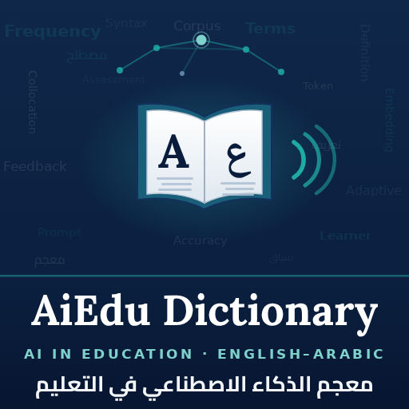

AI in Education: English–Arabic Dictionary
معجم الذكاء الاصطناعي في التعليم: إنجليزي–عربي
A comprehensive bilingual dictionary of Artificial Intelligence in Education terminology, compiled with the AMTA Lexicography Assistant and published on Lexonomy, an open-source dictionary platform. Each of its 1,211 entries pairs an English term with an Arabic equivalent and offers corpus-validated definitions in both languages, authentic examples, collocations, and citations to real research papers — grounded in academic literature rather than raw model output.
معجم ثنائي اللغة شامل لمصطلحات الذكاء الاصطناعي في التعليم، أُعدّ باستخدام مساعد AMTA المعجمي ونُشر على منصة Lexonomy مفتوحة المصدر. يجمع كل مدخل من مداخله البالغ عددها 1,211 بين المصطلح الإنجليزي ومقابله العربي، مع تعريفات موثّقة إحصائياً باللغتين وأمثلة أصيلة وتلازمات لفظية وإحالات إلى أوراق بحثية حقيقية — كل ذلك مستند إلى الأدبيات الأكاديمية لا إلى مخرجات النماذج الخام.
Open the Dictionary افتح المعجم About the AMTA Assistant عن مساعد AMTAWhat’s Inside
ماذا يتضمن المعجم؟
Every entry is a complete micro-lesson in how the term is defined, used, and researched
كل مدخل هو درس متكامل في تعريف المصطلح واستخدامه وأبحاثه
Bilingual Entries
مداخل ثنائية اللغة
Each English term is paired with an Arabic equivalent and parallel definitions in both languages, with Arabic definitions.
يُقترن كل مصطلح إنجليزي بمقابله العربي وتعريف موازٍ باللغتين، مع صياغة عربية للتعريفات
Grounded in Real Research
مستند إلى بحث حقيقي
Definitions were drafted from the abstracts of actual papers, and every entry cites an influential source with full bibliographic details and a DOI link — over 1,150 cited papers in total.
صيغت التعريفات من ملخصات أوراق بحثية فعلية، ويستشهد كل مدخل بورقة بحثية مؤثرة مع بياناتها الببليوغرافية الكاملة ورابط DOI — بأكثر من 1,150 ورقة مستشهد بها.
Collocations with Parts of Speech
تلازمات لفظية مع أنواع الكلام
More than 7,000 authentic word combinations tagged by grammatical function — noun (اسم), verb (فعل), or adjective (صفة) — showing how each term really behaves in academic writing.
أكثر من 7,000 تلازمة لفظية أصيلة مصنّفة وظيفياً — اسم أو فعل أو صفة — توضح السلوك اللغوي الحقيقي لكل مصطلح في الكتابة الأكاديمية.
Authentic Usage Examples
أمثلة استخدام أصيلة
Every entry includes a real-life example sentence with an Arabic translation, with the key term highlighted so learners see the term in genuine context.
يتضمن كل مدخل مثالاً واقعياً مع ترجمته العربية، مع إبراز المصطلح الأساسي ليرى المتعلم المصطلح في سياقه الحقيقي.
40 Specialist Domains
40 مجالاً تخصصياً
Entries are organised across the full landscape of AI in Education — from Intelligent Tutoring Systems and Learning Analytics to Ethics, Policy, and Teacher Support.
تنتظم المداخل في خريطة الذكاء الاصطناعي في التعليم كاملة — من أنظمة التدريس الذكية وتحليلات التعلم إلى الأخلاقيات والسياسات ودعم المعلمين.
Corpus Exploration Links
روابط استكشاف المدونات
Each entry links to SKELL, so researchers can see how the term is actually used across thousands of published academic texts.
يرتبط كل مدخل بمنصة SKELL ليطّلع الباحث على الاستخدام الفعلي للمصطلح في آلاف النصوص الأكاديمية المنشورة.
Audio Pronunciation
نطق صوتي
British English audio is built into every entry, so learners and students can hear each term pronounced correctly as they browse.
نطق بالإنجليزية البريطانية مدمج في كل مدخل، ليستمع الطلاب والمتعلمون إلى النطق الصحيح لكل مصطلح أثناء التصفح.
Openly Licensed
رخصة مفتوحة
The dictionary is freely accessible online and published under Creative Commons Attribution (CC BY 4.0) — share and adapt it with attribution.
المعجم متاح مجاناً على الإنترنت ومُصرّح بموجب رخصة المشاع الإبداعي CC BY 4.0 — شاركه وكيّفه مع نسبه إلى صاحبه.
Built with the AMTA Framework
بُني بإطار AMTA
From raw academic data to a published, open-access dictionary — the same pipeline the AMTA Lexicography Assistant automates
من البيانات الأكاديمية الخام إلى معجم منشور متاح للجميع — المسار نفسه الذي يؤتمته مساعد AMTA المعجمي
Term Discovery
اكتشاف المصطلحات
Domain terms were harvested from real research papers via 8+ academic APIs, including Semantic Scholar, Scopus, OpenAlex, Europe PMC, CORE, and arXiv.
جُمعت مصطلحات المجال من أوراق بحثية حقيقية عبر أكثر من 8 واجهات أكاديمية، منها Semantic Scholar وScopus وOpenAlex وEurope PMC وCORE وarXiv.
Statistical Validation
التحقق الإحصائي
Keyness scores and reference frequencies against the BAWE corpus confirmed that every term carries genuine academic usage.
أكدت درجات الأهمية والتكرارات المرجعية مقابل مجموعة BAWE المرجعية أن كل مصطلح يحمل استخداماً أكاديمياً حقيقياً.
RAG Definitions
تعريفات RAG
Gemini read the abstracts of real papers before drafting each definition, Arabic translation, and example — minimising hallucination.
قرأ Gemini ملخصات الأوراق البحثية الحقيقية قبل صياغة كل تعريف وترجمة عربية ومثال — بما يقلّص الهلوسة إلى أدنى حد.
Export & Publication
التصدير والنشر
The finished dictionary was exported as Lexonomy-ready XML from the AMTA Assistant and published as an open, searchable online dictionary.
صُدّر المعجم المكتمل بتنسيق XML الجاهز لمنصة Lexonomy من مساعد AMTA، ونُشر كمعجم رقمي مفتوح وقابل للبحث.
How to cite this dictionary:
Mandour, W. (2026). AI in Education: English–Arabic Dictionary (Version 1.0) [Data set]. Zenodo. https://doi.org/10.5281/zenodo.24288392 (CC BY 4.0).
The live, searchable edition is published on Lexonomy: https://www.lexonomy.eu/dictionary/AiEdu.
If you use the underlying methodology, please also cite the foundational framework:
Mandour, W. (2025, December 23). AI-augmented Method of Triangulation Approach for Specialised Lexicography. OSF. https://doi.org/10.17605/OSF.IO/8QB9V
كيفية الاستشهاد بهذا المعجم:
مندور، و. (2026). معجم الذكاء الاصطناعي في التعليم: إنجليزي–عربي (الإصدار 1.0) [مجموعة بيانات]. Zenodo. https://doi.org/10.5281/zenodo.24288392 (CC BY 4.0).
النسخة التفاعلية الحية منشورة على منصة Lexonomy: https://www.lexonomy.eu/dictionary/AiEdu.
وإذا استخدمت المنهجية الأساسية، يرجى الاستشهاد أيضاً بالإطار التأسيسي:
مندور، و. (2025، 23 ديسمبر). منهجية التثليث المعززة بالذكاء الاصطناعي للمعجم المتخصص. OSF. https://doi.org/10.17605/OSF.IO/8QB9V
The dictionary was compiled with the AMTA Lexicography Assistant and is hosted on Lexonomy, an open-source dictionary writing system (MIT licence). The dictionary content is released under the Creative Commons Attribution 4.0 International licence. A versioned archive of the dictionary data with a citable DOI is available on Zenodo. Full data attribution for scholarly metadata is available on the AMTA Assistant page.
أُعدّ هذا المعجم باستخدام مساعد AMTA المعجمي ويُستضاف على منصة Lexonomy، وهي نظام مفتوح المصدر لكتابة القواميس (رخصة MIT). ويُفرَج عن محتوى المعجم بموجب رخصة المشاع الإبداعي ونسب المصنف 4.0 الدولية. وتتوفّر نسخة مؤرشفة من بيانات المعجم مع مُعرِّف رقمي (DOI) قابل للاستشهاد على Zenodo. ويمكن الاطلاع على الإسناد الكامل للبيانات الأكاديمية في صفحة مساعد AMTA.
Scholarly metadata and abstracts were retrieved via the Semantic Scholar Open Data Platform (Kinney et al., 2023). Definitions and translations were AI-drafted from real paper abstracts and curated by the author.
جُمعت البيانات الوصفية والملخصات الأكاديمية عبر منصة Semantic Scholar المفتوحة للبيانات (Kinney وآخرون، 2023). وقد صيغت التعريفات والترجمات بالذكاء الاصطناعي استناداً إلى ملخصات أوراق حقيقية ثم راجعها المؤلف ونسّقها.
The First of the AI Specialized Dictionaries Series
أول معجم في سلسلة معاجم الذكاء الاصطناعي المتخصصة
Further specialised dictionaries are being compiled with the same open-source lexicographic pipeline. Install the AMTA Assistant and build yours.
يجري الآن إعداد مزيد من المعاجم المتخصصة بالمسار المعجمي مفتوح المصدر نفسه. ثبّت مساعد AMTA وابنِ معجمك أنت أيضاً.
Get the AMTA Assistant احصل على مساعد AMTA Explore the AMTA Project استكشف مشروع AMTA